Префектура Гифу · от Хасимы до Хида-Фурукавы · маршрут
По следам монаха Энку: резные будды и ремесленные города Гифу
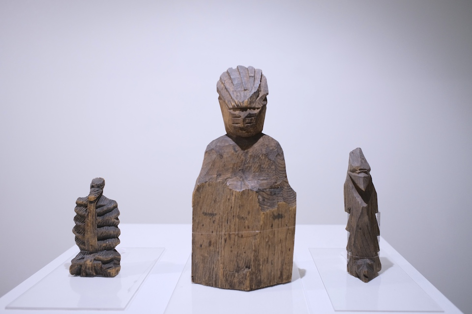
Монах Энку за свою жизнь, по преданию, вырезал из дерева 120 000 будд, и около 1300 из сохранившихся стоят в его родной префектуре Гифу. Мы прошли по его местам с юга на север и увидели, что ремесло здесь живо до сих пор.
Маршрут
Дорога Энку
От Токио до станции Гифу-Хасима около двух часов на синкансэне. С платформы видна площадь перед вокзалом, и первым гостя встречает огромный памятник, повторяющий статую работы Энку. Префектура Гифу для этого монаха и начало, и конец пути: здесь он родился и здесь же ушёл из жизни. Местные жители до сих пор называют его по-домашнему, с теплотой, просто «Энку».
По области протянулся туристический маршрут «Энку-роуд». Он ведёт вдоль рек Кисо, Нагара, Хида и Миягава через шесть городов, связанных с монахом: Хасиму, Сэки, Гудзё, Гэро, Такаяму и Хида. По нему мы и поехали, чтобы посмотреть, где рос Энку, и заодно узнать, чем живут мастера Гифу.
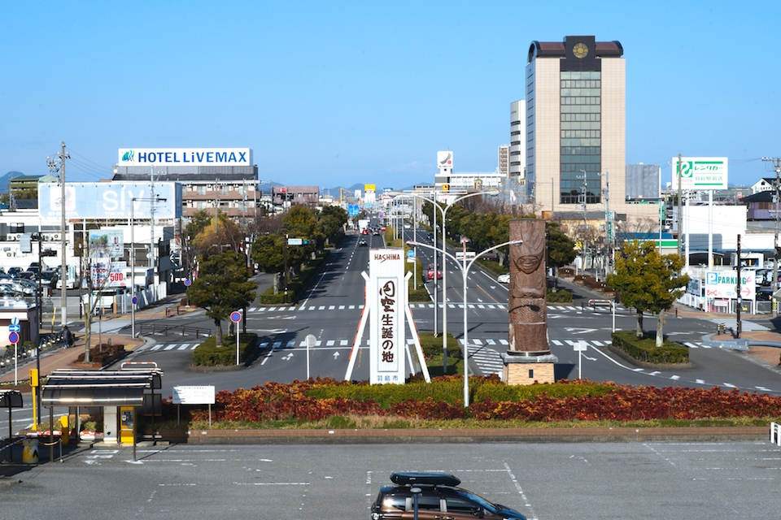
Хасима
Каннон, вырезанная для матери
Статуи Энку называют «будды Энку». По одной из версий, за жизнь он вырезал 120 000 фигур, и больше 5000 из них найдены в разных концах страны, от Хоккайдо на севере до префектур Миэ и Нара на юге. Станция Гифу-Хасима служит началом путешествия, а заодно и поводом задуматься: где вырос человек, который вырезал такие добрые лица, и что его сформировало? Мы хотели увидеть его работы своими глазами и хотя бы немного пройти тем путём, каким шёл странствующий резчик.
Первая остановка: храмовый зал «Нака-каннондо» с музеем Энку в Хасиме. Здесь хранятся 17 статуй Энку, и всё это время их берегут сами жители округи.
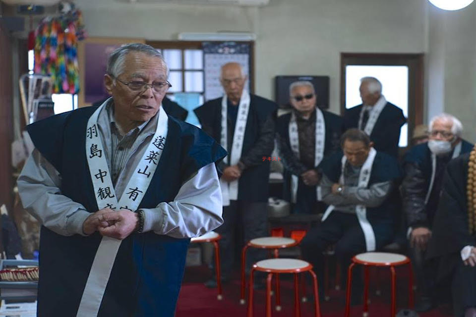
Главная святыня зала: одиннадцатиликая Каннон. По преданию, Энку вырезал её около сорока лет от роду, к 33-й годовщине смерти матери. Она погибла при наводнении на реке Кисо, когда мальчику было семь лет. У статуи спокойное, мягкое лицо, и в нём чувствуется, как долго сын помнил о матери.
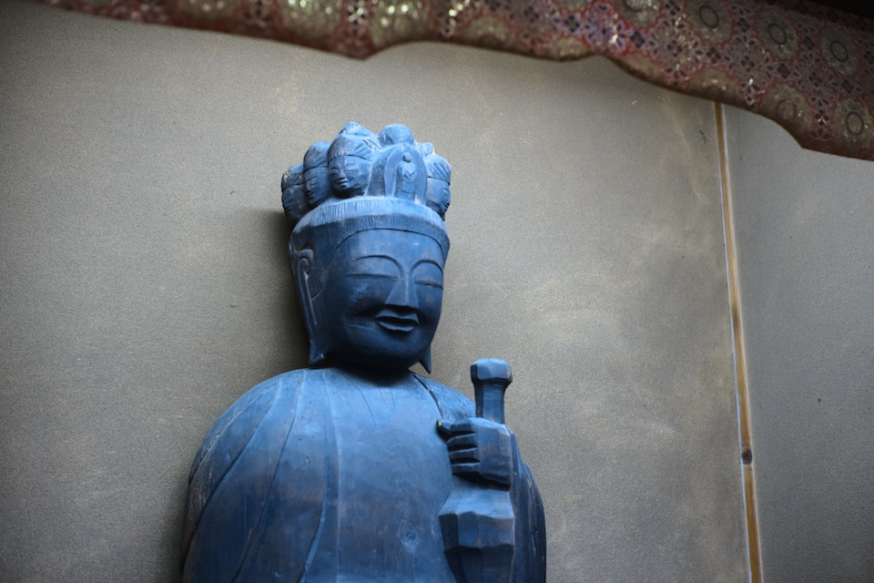
«Нака-каннондо» и музей Энку в Хасиме
- Адрес
- префектура Гифу, Хасима, Каминака-тё Нака, 526
Сэки
Город клинков
Дальше мы поехали в Сэки. Здесь Энку провёл последние годы и здесь же завершил жизнь, уйдя в добровольное погребение, как это было принято у аскетов. Но в Японии Сэки знают прежде всего как город ножей. Оружейники поселились здесь на стыке эпох Камакура и Муромати, в XIV веке, и с тех пор местное ремесло насчитывает около 700 лет. Сэки ставят в один ряд с немецким Золингеном и английским Шеффилдом как три главных ножевых города мира.
Для клинка нужны вода, гора и земля, и у Сэки есть все три. Река Нагара даёт много чистой воды. Сосновый уголь нужен, чтобы разжечь огонь и закалить сталь. Красная глина идёт на обмазку меча. В музее «Сэки хамоно» можно посмотреть, как куют японский меч (платно, по предварительной записи).
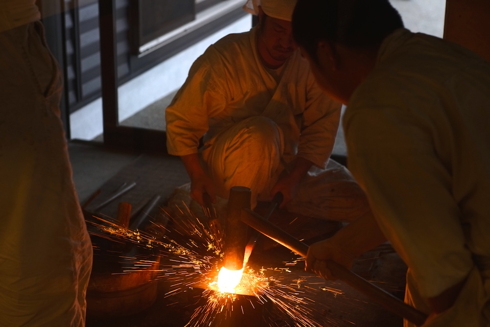
К 2019 году мода на японские мечи держалась уже несколько лет, и на ковку всё чаще приходили посмотреть женщины. В тот день у горна работал один из самых популярных кузнецов Сэки, мастер 26-го поколения своей династии. В горне горит сосновый уголь, мехи раздувают пламя. Железо и сталь, сложенные вместе, раскаляют докрасна, посыпают золой от рисовой соломы и бьют молотом. Красные искры разлетаются во все стороны, и от этого зрелища трудно оторваться.
«Интересно в мече то, что двух одинаковых не бывает: каждый делаешь своим. Я ищу, пробую, ошибаюсь и делаю их по одному»
молодой кузнец
Слушая его, легко представить и Энку, который тоже вкладывал душу в каждую статую. Может быть, в странствиях он резал своих будд как раз ножами из этих мест.
Музей «Сэки хамоно»
- Адрес
- префектура Гифу, Сэки, Осэ, 950-1
Угорь и мисо на листе магнолии
В ремесленных городах Гифу любят то, что можно съесть быстро и что даёт силы: блюда в больших чашках с рисом. В Сэки много мест, где хорошо готовят угря. А на столе всего края и в старину, и по сей день обязательно есть хоба-мисо: мисо смешивают с зелёным луком, кладут на сухой лист японской магнолии и запекают. Вода в Гифу чистая, и мисо здесь отличное. В каждой семье хоба-мисо готовят по-своему, а холодной зимой без него не обходится ни один стол. Для местных его вкус и есть вкус дома.
Мы зашли в «Какумару», знаменитую закусочную с угрём, открытую в 1874 году. Здесь подают «араи», тонко нарезанного сырого карпа, ополоснутого в холодной воде, и угря: снаружи хрустящего, внутри мягкого, с поджаристым ароматом.
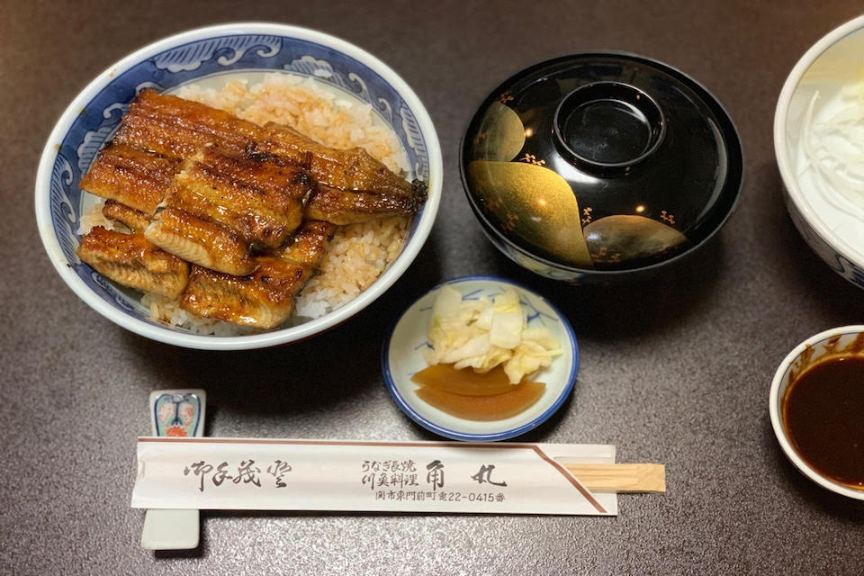
«Какумару»
- Адрес
- префектура Гифу, Сэки, Хигаси-Мондзэн-тё, 21
Гудзё
Замок в облаках и местное сакэ
После обеда около часа на автобусе вверх по реке Нагара, и мы в городе Гудзё. Здесь стоит замок Гудзё-Хатиман, восстановленный в 1933 году: его считают самым старым в Японии деревянным замком, отстроенным заново. Один известный писатель назвал его самым красивым горным замком страны. В тот день шёл дождь, и «замок в небе» целиком скрывался в густом тумане.
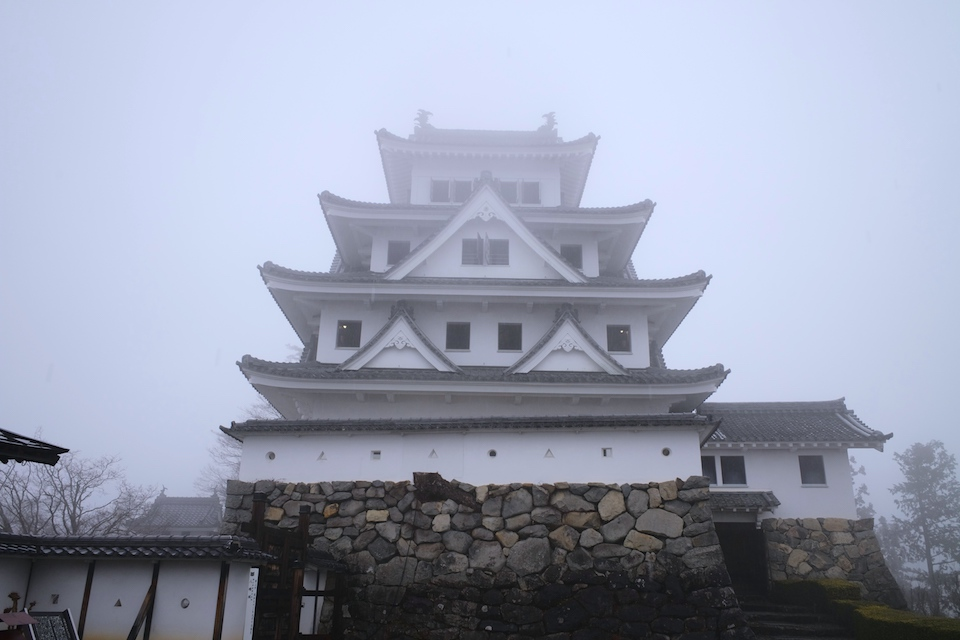
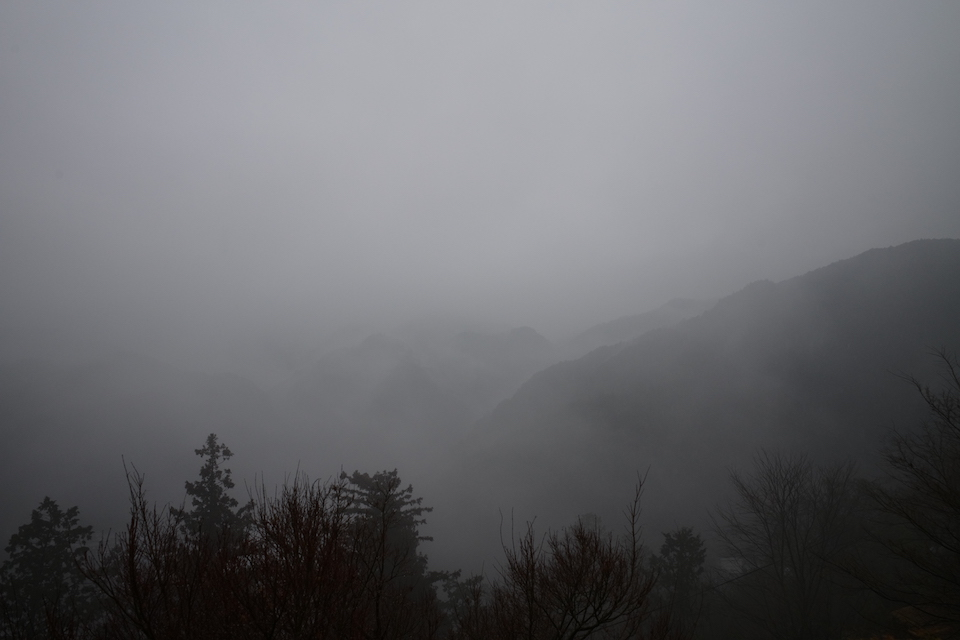
Гудзё называют главным городом танцев в Японии: здесь проходят летние «Гудзё-одори» и «Сиротори-одори». Через центр текут реки Ёсида и Нагара, и город по праву зовут водным. Гифу вообще славится праздниками: весенний и осенний фестивали в Такаяме, фестиваль Фурукава с барабаном «окоси-дайко» в Хида-Фурукаве. А где любят праздники и где чистая вода, там непременно есть и хорошее сакэ.
В Гудзё-Хатимане мы попробовали местное сакэ в «Уэда сакэтэн», самой старой винной лавке города. Многое здесь продаётся только в этой лавке: например, ограниченная серия дайгиндзё «Сидзуку-дзакэ» или сакэ с названием «Гудзё-одори».
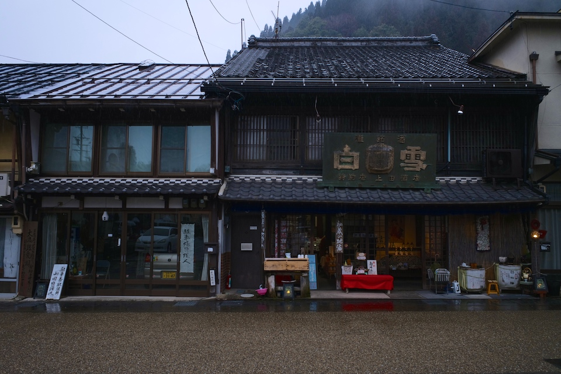
«Уэда сакэтэн»
- Адрес
- префектура Гифу, Гудзё, Хатиман-тё Хоммати, 846-3
Гэро
Водопады и углекислые источники
Переночевав в Гудзё, мы отправились в Гэро, самый известный онсэн префектуры. Будды Энку есть и в окрестностях Гэро, а в «Энку-кан» в деревне-музее Гэро-онсэн Гассё-мура показывают в основном поздние работы мастера. Энку оставил статуи по всей Японии, но из 5000 известных будд около 1300 хранятся в его родной префектуре.
Гэро любят за онсэны, но нам нужен был Осака-тё, горный район города, известный водопадами и углекислыми источниками. В глубине здешних гор 216 водопадов высотой больше пяти метров: больше, чем где-либо ещё в Японии. Вода прозрачная, и летом в реках хорошо плескаться. Зимой можно пройтись по снежным полям, и в ясную погоду вдали видны горы Норикура и Онтакэ. Возможно, эта величественная природа вдохновляла и Энку.
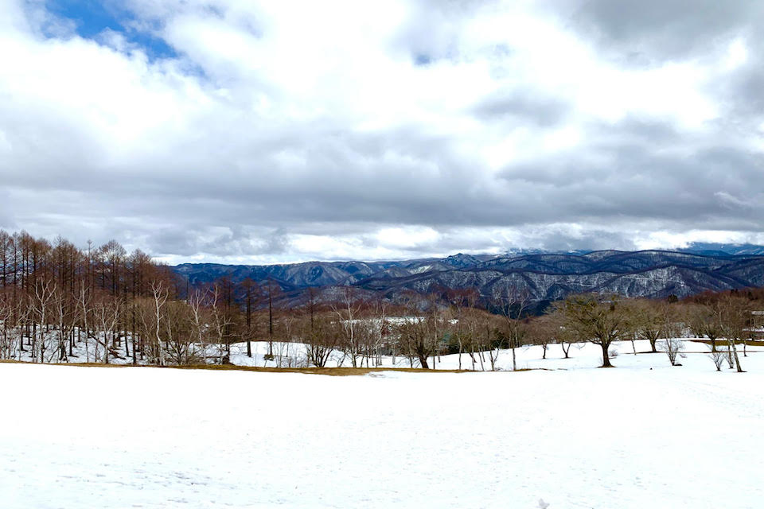
В Осака-тё мы ели набэ, овощное блюдо в котелке на углекислой воде. Нежный тофу и местный сладкий лук отдают бульону весь вкус, и он становится густым и мягким. Говорят, углекислая вода полезна для желудка, и мы не раз просили добавки.
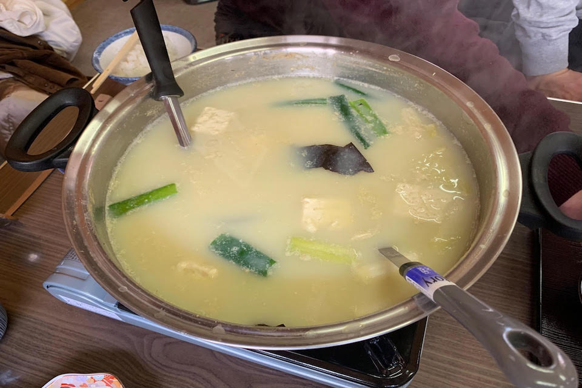
Гэро-онсэн Гассё-мура («Энку-кан»)
- Адрес
- префектура Гифу, Гэро, Мори, 2369
Такаяма
Праздник, мастера Хида и утренний рынок
К вечеру мы добрались до Такаямы, где ночевали. Перед тем как заселиться, прошлись по старым кварталам и купили сакэ в старинной сакэварне.
Главное событие Такаямы это фестиваль Такаяма, весной и осенью. Зима в горном краю Хида долгая. Весеннего праздника Санно-мацури ждут всю долгую зиму: на нём просят хорошего урожая, а осенним праздником Хатиман-мацури за урожай благодарят. Начало фестиваля уходит в правление рода Канамори, который владел городом с 1585 по 1692 год. Праздничные повозки-ятай, по документам, впервые вывезли в 1718 году, около 300 лет назад.
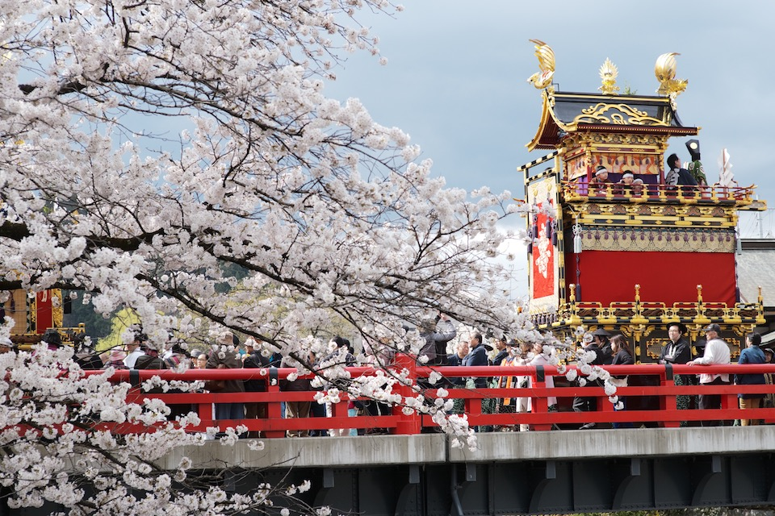
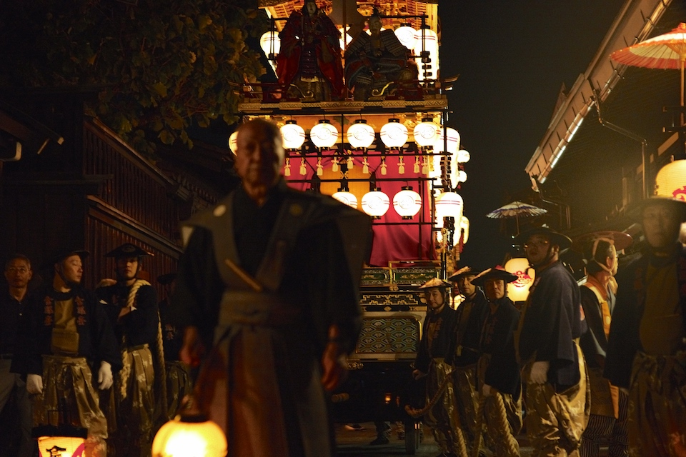
Такаяма была владением сёгуната Эдо и городом торговцев, где процветала культура простых горожан. Старые кварталы в эпоху Эдо были улицами богатых купцов: на их деньги и мастерство резчиков Хида держались праздничные повозки. Весной повозки соперничают с сакурой, осенью их торжественно провозят по старым улицам в вечерней процессии.
В краю Хида есть выражение «мастера Хида». Около 1300 лет назад жители этих мест вместо налога зерном отправлялись в Киото и Нару и работали плотниками на дворцах, храмах и святилищах столицы. Их мастерство стало знаменитым, и некоторые остались в тех землях навсегда. В Такаяме сохранилось много жилых домов, где видна работа этих плотников.
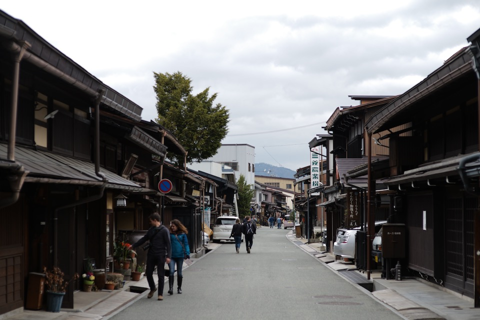
Дома семей Кусакабэ и Ёсидзима построены в эпоху Мэйдзи по образцу домов эпохи Эдо, и мастерство плотников Хида видно в них до сих пор. У домов узкий фасад и широкий земляной пол, а под самой крышей над высоким пролётом есть окно, через которое падает свет. В доме есть и очаг ирори, вокруг которого когда-то шла вся жизнь. Бумагу на сёдзи клеят по старинке, с внутренней и внешней стороны вперемежку, чтобы с улицы не было видно, что внутри, а изнутри не было видно улицы.
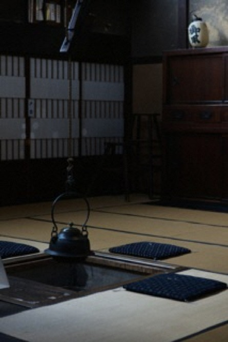
Утренние рынки в Такаяме работают каждый день, в двух местах: вдоль реки Миягава и на площади перед Такаяма-дзинъя, бывшей резиденцией наместника. Они издавна вплетены в жизнь горожан. На прилавках тесно от того, что нужно к столу: местные овощи и фрукты, рисовые лепёшки моти, соленья.
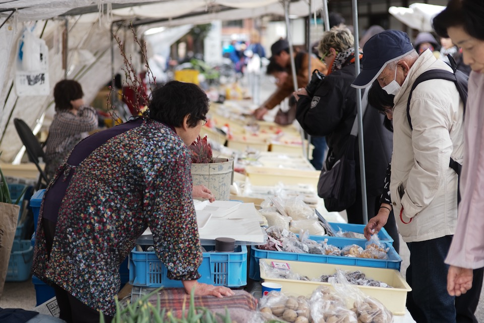
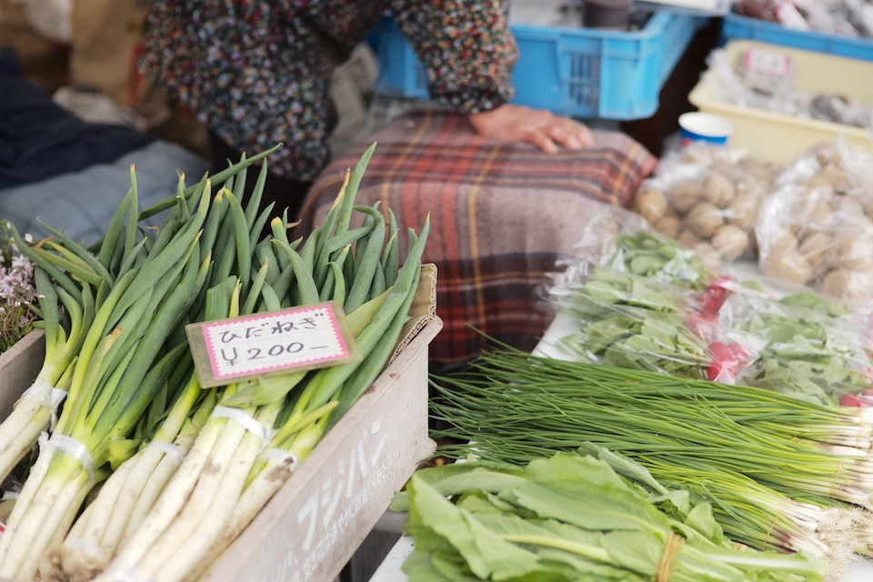
Когда-то торговки возили товар на тележках, потом пересели на машины, но рынок, о котором говорили «зеленщик не нужен», для горожан всё так же важен. Мы каждый раз покупаем здесь деревенские моти: они долго не портятся и выдерживают дорогу. Свежие продукты из рук в руки и разговор с продавцом: городскому жителю остаётся только завидовать.
В Такаяме будд Энку можно увидеть и в городском музее «Хида Такаяма мати-но хакубуцукан». Он устроен в амбарах двух богатых купеческих семей эпохи Эдо. Здесь хранятся статуи, которым молились в обычных домах. Энку был для местных настолько своим, что сохранилась почти сказочная история о том, как дети брали его будду с собой купаться в реке.
«Хида Такаяма мати-но хакубуцукан»
- Адрес
- префектура Гифу, Такаяма, Ками-Ити-но-мати, 75
Хида-Фурукава
Свечи, которые делают как 240 лет назад
Последняя остановка: город Хида, самый северный в префектуре. Его старый центр Хида-Фурукава известен белыми амбарами и каналом Сэто, вдоль которого по-прежнему течёт обычная жизнь горожан.
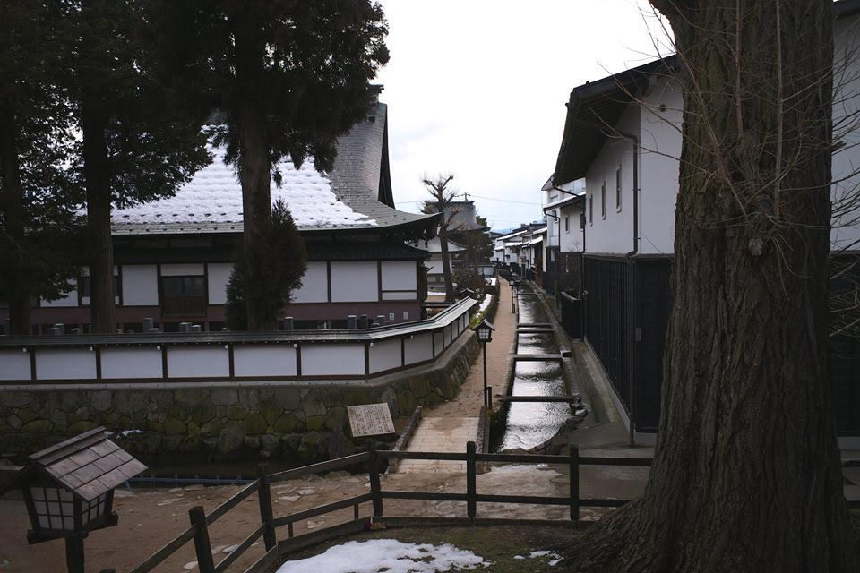
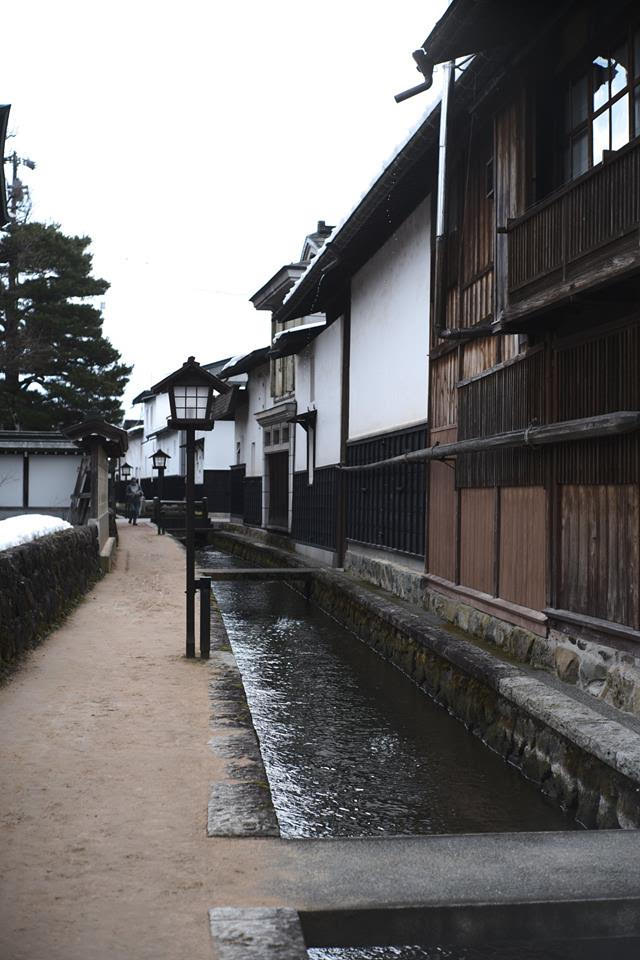
Если вы в Фурукаве, обязательно зайдите в «Мисима варосоку», лавку японских свечей, которой больше 240 лет. Здесь делают свечи «кигакэ»: фитиль из ситника и японской бумаги много раз обмазывают растопленным растительным воском из плодов сумаха. Вся свеча на 100% состоит из природных материалов.
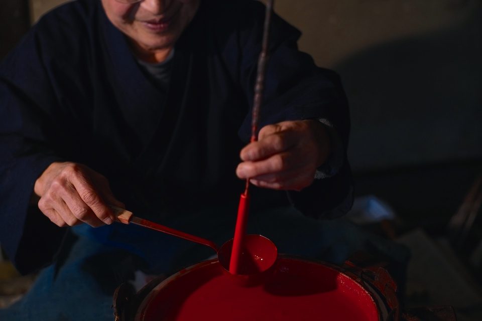
Таким способом свечи делают примерно в десяти мастерских Японии, и только здесь вся работа от начала до конца ручная. Прямо у входа в лавку мастерская, и мастер седьмого поколения как раз делал красные свечи. Он сидел перед котелком с растопленным красным воском и снова и снова покрывал им свечи. Воск природный, поэтому такие свечи почти не коптят и горят долго.
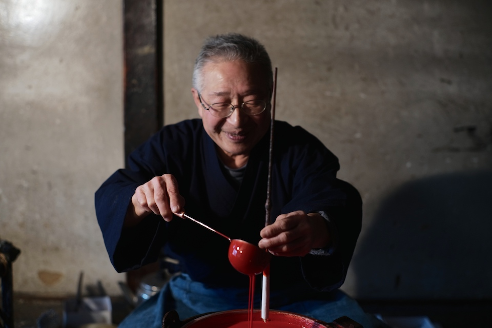
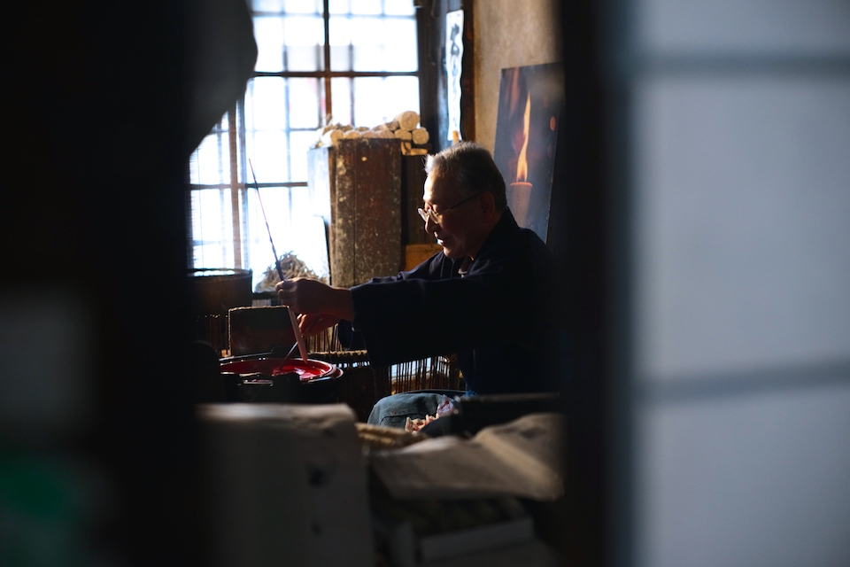
Его улыбка в мастерской, где свечи делают по одной, как в эпоху Эдо, стала самым ярким воспоминанием этой поездки. Красные и белые свечи мы купили на память у мастера восьмого поколения.
«Мисима варосоку»
- Адрес
- префектура Гифу, Хида, Фурукава-тё Ити-но-мати, 3-12
Где увидеть
Будды Энку на маршруте
Во времена, когда ходить можно было только пешком, путь Энку вряд ли был лёгким. Мы же проехали по его следам через щедрые земли и встретили людей, от которых невольно хочется улыбнуться. Вот где на этом маршруте можно увидеть его будд:
- «Нака-каннондо» и музей Энку в Хасиме: 17 статуй, среди них одиннадцатиликая Каннон, вырезанная в память о матери.
- «Энку-кан» в деревне Гэро-онсэн Гассё-мура: в основном поздние работы мастера.
- «Хида Такаяма мати-но хакубуцукан» в Такаяме: будды, которым молились в домах горожан.